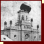
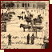
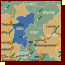
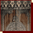
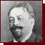
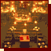

| 1864– 1871 |
 | The synagogue in Kecskemét | ||||
| 1866– 1869 |
 | The synagogue in Pécs | ||||
| 1868– 1869 |
The memorial leaf of the General Assembly of Hungarian and Transylvanian Israelites | |||||
| 1869– 1919 |
 | Map | ||||
| 1870– 1872 |
 | The Rumbach Street Synagogue, Budapest | ||||
| 1876 | The Rabbinical Seminary, Budapest (1902) | |||||
| 1876 | Mózes Bloch (1815–1907) | |||||
| 1888 |  | Lipót Baumhorn (1860–1932) | ||||
| 1898 | The synagogue in Szolnok | |||||
| 1899 | Sámuel Kohn (1841–1920) | |||||
|
||||||
| 1912– 1913 |
 | The Kazinczy Street Synagogue, Budapest | ||||